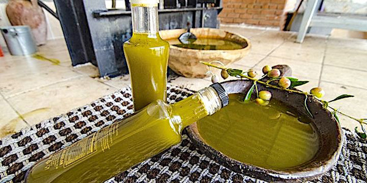

Zeytinyağı
Ayvalık Ticaret Odası tarafından tescil ettirildi. Altın sarısı renkte, hoş kokulu, yüksek aromalı,
kimyasal ve duyusal özellikleri çok iyi olan Ayvalık-Edremit zeytinlerinden üretilen zeytinyağını diğer zeytin yağlarından
ayırt edici özelliği toprağın mineral yapısı, Madra ve Kaz dağlarının yarattığı hava akımlarının don ve kırağıyı engellemesi
sonucu ortalama bir yıl olan dayanıklılık süresini 19-24 aya çıkarması.
